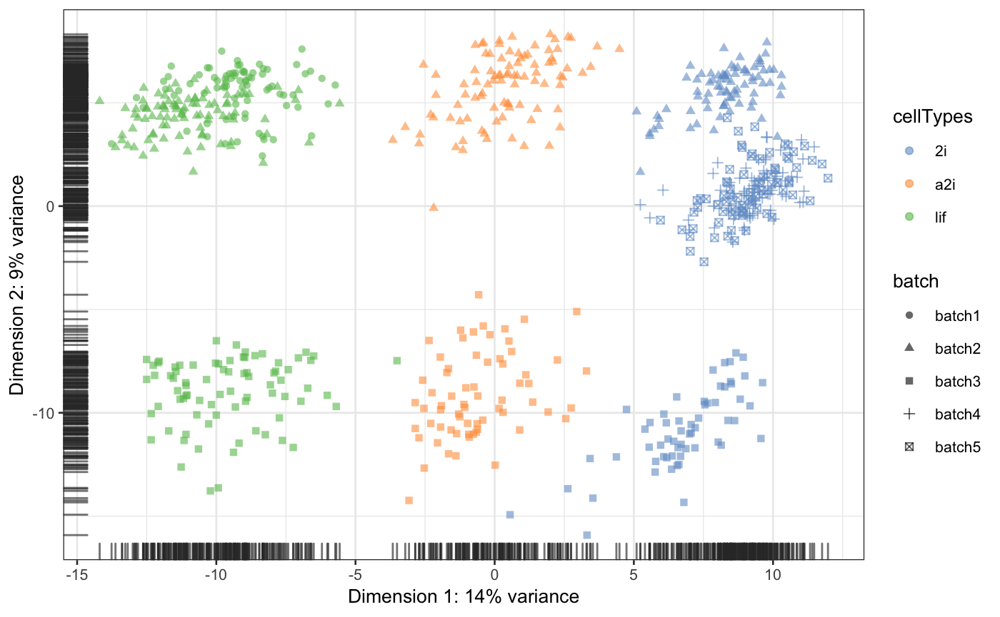

Mouse Embryonic Data
Kevin Wang
20/08/2018
Source:vignettes/Mouse_Embryonic_Data/Mouse_Embyronic_Data_Processing.Rmd
Mouse_Embyronic_Data_Processing.RmdPlotting raw data
In the mESC data, we pooled data from 5 different batches from three different cell types. Using a PCA plot, we can see that despite strong separation of cell types, there is also a strong separation due to batch effects. This information is stored in the colData of sce_mESC.
sce_mESC## Loading required package: SingleCellExperiment## Loading required package: SummarizedExperiment## Loading required package: GenomicRanges## Loading required package: stats4## Loading required package: BiocGenerics## Loading required package: parallel##
## Attaching package: 'BiocGenerics'## The following objects are masked from 'package:parallel':
##
## clusterApply, clusterApplyLB, clusterCall, clusterEvalQ,
## clusterExport, clusterMap, parApply, parCapply, parLapply,
## parLapplyLB, parRapply, parSapply, parSapplyLB## The following objects are masked from 'package:stats':
##
## IQR, mad, sd, var, xtabs## The following objects are masked from 'package:base':
##
## anyDuplicated, append, as.data.frame, basename, cbind,
## colMeans, colnames, colSums, dirname, do.call, duplicated,
## eval, evalq, Filter, Find, get, grep, grepl, intersect,
## is.unsorted, lapply, lengths, Map, mapply, match, mget, order,
## paste, pmax, pmax.int, pmin, pmin.int, Position, rank, rbind,
## Reduce, rowMeans, rownames, rowSums, sapply, setdiff, sort,
## table, tapply, union, unique, unsplit, which, which.max,
## which.min## Loading required package: S4Vectors##
## Attaching package: 'S4Vectors'## The following object is masked from 'package:base':
##
## expand.grid## Loading required package: IRanges## Loading required package: GenomeInfoDb## Loading required package: Biobase## Welcome to Bioconductor
##
## Vignettes contain introductory material; view with
## 'browseVignettes()'. To cite Bioconductor, see
## 'citation("Biobase")', and for packages 'citation("pkgname")'.## Loading required package: DelayedArray## Loading required package: matrixStats##
## Attaching package: 'matrixStats'## The following objects are masked from 'package:Biobase':
##
## anyMissing, rowMedians## Loading required package: BiocParallel##
## Attaching package: 'DelayedArray'## The following objects are masked from 'package:matrixStats':
##
## colMaxs, colMins, colRanges, rowMaxs, rowMins, rowRanges## The following objects are masked from 'package:base':
##
## aperm, apply## class: SingleCellExperiment
## dim: 24224 704
## metadata(0):
## assays(2): counts logcounts
## rownames(24224): ENSMUSG00000000001 ENSMUSG00000000028 ...
## ENSMUSG00000060565 ENSMUSG00000080069
## rowData names(0):
## colnames(704): ola_mES_lif_1_1.counts ola_mES_lif_1_10.counts ...
## ola_mES_2i_5_95.counts ola_mES_2i_5_96.counts
## colData names(2): cellTypes batch
## reducedDimNames(0):
## spikeNames(0):table(sce_mESC$batch, sce_mESC$cellTypes)##
## 2i a2i lif
## batch1 0 0 81
## batch2 82 93 90
## batch3 59 66 79
## batch4 72 0 0
## batch5 82 0 0scater::plotPCA(sce_mESC,
colour_by = "cellTypes",
shape_by = "batch")
Unsupervised scMerge with default options
sce_mESC <- scMerge(sce_combine = sce_mESC,
ctl = segList_ensemblGeneID$mouse$mouse_scSEG,
kmeansK = c(1,3,3,1,1),
assay_name = "scMerge_unsupervised")We can see the batch effect was corrected.
sce_mESC <- scater::runPCA(sce_mESC,
exprs_values = "scMerge_unsupervised")
scater::plotPCA(sce_mESC,
colour_by = "cellTypes",
shape_by = "batch")